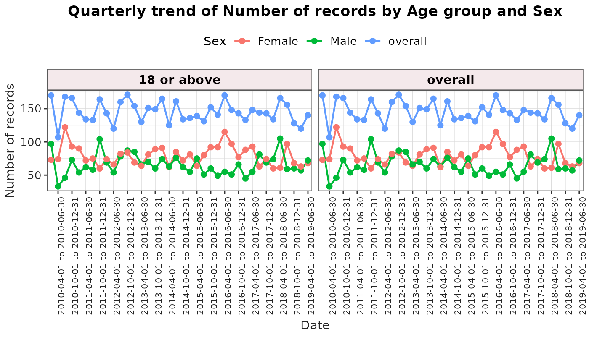
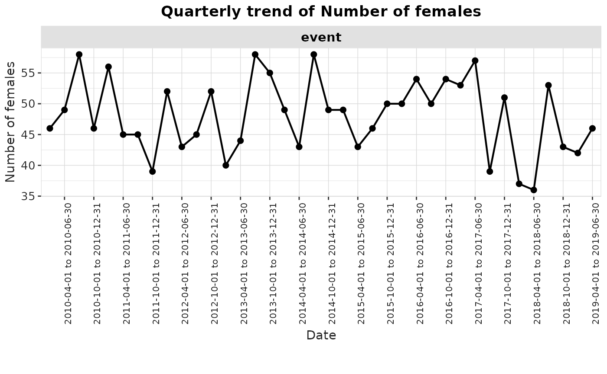
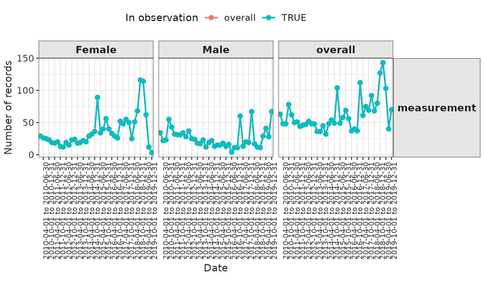

Introduction
In this vignette, we will explore the OmopSketch function
summariseTrend(), which summarises temporal trends from
OMOP CDM tables. This function allows you to visualise how key measures
(such as number of records, number of persons, person-days, age, or sex
distribution) change over time.
Create a mock cdm
Let’s start by loading essential packages and creating a mock CDM using the R package omock
library(omock)
library(OmopSketch)
library(dplyr)
#>
#> Attaching package: 'dplyr'
#> The following objects are masked from 'package:stats':
#>
#> filter, lag
#> The following objects are masked from 'package:base':
#>
#> intersect, setdiff, setequal, union
library(visOmopResults)
cdm <- mockCdmFromDataset(datasetName = "GiBleed", source = "duckdb")
#> ℹ Reading GiBleed tables.
#> ℹ Adding drug_strength table.
#> ℹ Creating local <cdm_reference> object.
#> ℹ Inserting <cdm_reference> into duckdb.
cdm
#>
#> ── # OMOP CDM reference (duckdb) of GiBleed ────────────────────────────────────
#> • omop tables: care_site, cdm_source, concept, concept_ancestor, concept_class,
#> concept_relationship, concept_synonym, condition_era, condition_occurrence,
#> cost, death, device_exposure, domain, dose_era, drug_era, drug_exposure,
#> drug_strength, fact_relationship, location, measurement, metadata, note,
#> note_nlp, observation, observation_period, payer_plan_period, person,
#> procedure_occurrence, provider, relationship, source_to_concept_map, specimen,
#> visit_detail, visit_occurrence, vocabulary
#> • cohort tables: -
#> • achilles tables: -
#> • other tables: -Summarise temporal trends
Let’s use summariseTrend() to get an overview of the
content of the table over time. In this example, we’ll summarise yearly
trends for condition_occurrence and drug_exposure
tables, and also include observation_period as an episode
table.
summarisedResult <- summariseTrend(
cdm = cdm,
event = c("condition_occurrence", "drug_exposure"),
episode = "observation_period",
interval = "years",
)
summarisedResult |>
glimpse()
#> Rows: 676
#> Columns: 13
#> $ result_id <int> 1, 1, 2, 2, 1, 1, 1, 1, 2, 2, 1, 1, 1, 1, 2, 2, 1, 1,…
#> $ cdm_name <chr> "GiBleed", "GiBleed", "GiBleed", "GiBleed", "GiBleed"…
#> $ group_name <chr> "omop_table", "omop_table", "omop_table", "omop_table…
#> $ group_level <chr> "condition_occurrence", "condition_occurrence", "obse…
#> $ strata_name <chr> "overall", "overall", "overall", "overall", "overall"…
#> $ strata_level <chr> "overall", "overall", "overall", "overall", "overall"…
#> $ variable_name <chr> "Number of records", "Number of records", "Number of …
#> $ variable_level <chr> NA, NA, NA, NA, NA, NA, NA, NA, NA, NA, NA, NA, NA, N…
#> $ estimate_name <chr> "count", "percentage", "count", "percentage", "count"…
#> $ estimate_type <chr> "integer", "percentage", "integer", "percentage", "in…
#> $ estimate_value <chr> "1", "0.00", "2", "0.04", "4", "0.01", "4", "0.01", "…
#> $ additional_name <chr> "time_interval", "time_interval", "time_interval", "t…
#> $ additional_level <chr> "1908-01-01 to 1908-12-31", "1908-01-01 to 1908-12-31…Notice that the output is in the summarised result format.
What are Event and Episode tables?
Event tables capture occurrences that happen at a single point in time (for example, a diagnosis, a prescription, or a measurement). For these tables, each record is linked to a time interval based only on its start date.
Episode describe periods that span over time (for example, observation periods or treatment eras). Each record contributes to every time interval between its start and end dates, reflecting its entire duration within the study period.
You can check whether a table was treated as an event or an episode table in the settings of the summarised result:
summarisedResult |>
addSettings(settingsColumn = "type") |>
glimpse()
#> Rows: 676
#> Columns: 14
#> $ result_id <int> 1, 1, 2, 2, 1, 1, 1, 1, 2, 2, 1, 1, 1, 1, 2, 2, 1, 1,…
#> $ cdm_name <chr> "GiBleed", "GiBleed", "GiBleed", "GiBleed", "GiBleed"…
#> $ group_name <chr> "omop_table", "omop_table", "omop_table", "omop_table…
#> $ group_level <chr> "condition_occurrence", "condition_occurrence", "obse…
#> $ strata_name <chr> "overall", "overall", "overall", "overall", "overall"…
#> $ strata_level <chr> "overall", "overall", "overall", "overall", "overall"…
#> $ variable_name <chr> "Number of records", "Number of records", "Number of …
#> $ variable_level <chr> NA, NA, NA, NA, NA, NA, NA, NA, NA, NA, NA, NA, NA, N…
#> $ estimate_name <chr> "count", "percentage", "count", "percentage", "count"…
#> $ estimate_type <chr> "integer", "percentage", "integer", "percentage", "in…
#> $ estimate_value <chr> "1", "0.00", "2", "0.04", "4", "0.01", "4", "0.01", "…
#> $ additional_name <chr> "time_interval", "time_interval", "time_interval", "t…
#> $ additional_level <chr> "1908-01-01 to 1908-12-31", "1908-01-01 to 1908-12-31…
#> $ type <chr> "event", "event", "episode", "episode", "event", "eve…Outputs
You can choose what to summarise using the output
argument. Options include:
“record”: Number of records (default value)
“person”: Number of distinct persons
“person-days”: Number of person-days (episode tables only)
“age”: Median age at start date of each interval
“sex”: Number of females
Records and subjects per year
For each time interval the results will include the number of records and number of individuals observed during that period. In addition to absolute counts, the function also reports the percentage of records and individuals within each interval relative to the total counts in the entire table.
summarisedResult <- summariseTrend(
cdm = cdm,
event = "condition_occurrence",
output = c("record", "person"),
interval = "years"
)
summarisedResult |>
select(group_level, variable_name, additional_level, estimate_name, estimate_value)
#> # A tibble: 452 × 5
#> group_level variable_name additional_level estimate_name estimate_value
#> <chr> <chr> <chr> <chr> <chr>
#> 1 condition_occurr… Number of re… 1908-01-01 to 1… count 1
#> 2 condition_occurr… Number of su… 1908-01-01 to 1… count 1
#> 3 condition_occurr… Number of re… 1908-01-01 to 1… percentage 0.00
#> 4 condition_occurr… Number of su… 1908-01-01 to 1… percentage 0.04
#> 5 condition_occurr… Number of re… 1909-01-01 to 1… count 4
#> 6 condition_occurr… Number of su… 1909-01-01 to 1… count 4
#> 7 condition_occurr… Number of re… 1909-01-01 to 1… percentage 0.01
#> 8 condition_occurr… Number of su… 1909-01-01 to 1… percentage 0.15
#> 9 condition_occurr… Number of re… 1910-01-01 to 1… count 16
#> 10 condition_occurr… Number of su… 1910-01-01 to 1… count 13
#> # ℹ 442 more rowsPerson-days
When an episode table is specified, you can include “person-days” in the output to summarise total follow-up time across intervals. The results will show both the number of person-days in each interval and the percentage of person-days relative to the total accumulated across the entire table.
summarisedResult <- summariseTrend(
cdm = cdm,
episode = "observation_period",
output = "person-days",
interval = "years"
)
summarisedResult |>
select(group_level, variable_name, additional_level, estimate_name, estimate_value)
#> # A tibble: 226 × 5
#> group_level variable_name additional_level estimate_name estimate_value
#> <chr> <chr> <chr> <chr> <chr>
#> 1 observation_peri… Person-days 1908-01-01 to 1… count 175
#> 2 observation_peri… Person-days 1908-01-01 to 1… percentage 0.00
#> 3 observation_peri… Person-days 1909-01-01 to 1… count 4636
#> 4 observation_peri… Person-days 1909-01-01 to 1… percentage 0.01
#> 5 observation_peri… Person-days 1910-01-01 to 1… count 9946
#> 6 observation_peri… Person-days 1910-01-01 to 1… percentage 0.01
#> 7 observation_peri… Person-days 1911-01-01 to 1… count 13031
#> 8 observation_peri… Person-days 1911-01-01 to 1… percentage 0.02
#> 9 observation_peri… Person-days 1912-01-01 to 1… count 16986
#> 10 observation_peri… Person-days 1912-01-01 to 1… percentage 0.02
#> # ℹ 216 more rowsNote: The function will automatically skip “person-days” for event tables.
summarisedResult <- summariseTrend(
cdm = cdm,
event = "visit_occurrence",
output = "person-days",
interval = "years"
)
#> → The number of person-days is not computed for event tables
summarisedResult
#> # A tibble: 0 × 13
#> # ℹ 13 variables: result_id <int>, cdm_name <chr>, group_name <chr>,
#> # group_level <chr>, strata_name <chr>, strata_level <chr>,
#> # variable_name <chr>, variable_level <chr>, estimate_name <chr>,
#> # estimate_type <chr>, estimate_value <chr>, additional_name <chr>,
#> # additional_level <chr>Age
When “age” is included in the output argument, the function reports the median age of individuals for each time interval. For every record, age is calculated either at the start of the time interval or at the record’s start date, whichever comes first. This allows you to examine how the age distribution of individuals evolves over time for a given event or episode table.
summarisedResult <- summariseTrend(
cdm = cdm,
event = "condition_occurrence",
output = "age",
interval = "years"
)
summarisedResult |>
select(variable_name, additional_level, estimate_name, estimate_value)
#> # A tibble: 113 × 4
#> variable_name additional_level estimate_name estimate_value
#> <chr> <chr> <chr> <chr>
#> 1 Age 1908-01-01 to 1908-12-31 median 0
#> 2 Age 1909-01-01 to 1909-12-31 median 0
#> 3 Age 1910-01-01 to 1910-12-31 median 1
#> 4 Age 1911-01-01 to 1911-12-31 median 1
#> 5 Age 1912-01-01 to 1912-12-31 median 1
#> 6 Age 1913-01-01 to 1913-12-31 median 1
#> 7 Age 1914-01-01 to 1914-12-31 median 3
#> 8 Age 1915-01-01 to 1915-12-31 median 3
#> 9 Age 1916-01-01 to 1916-12-31 median 4
#> 10 Age 1917-01-01 to 1917-12-31 median 5
#> # ℹ 103 more rowsSex output
When “sex” is included in the output argument, the function counts the number of females in each time interval. It also provides the percentage of females relative to the total number of individuals in the entire table. This output is particularly useful for exploring changes in the sex distribution of records over time.
summarisedResult <- summariseTrend(
cdm = cdm,
event = "condition_occurrence",
output = "sex",
interval = "years"
)
summarisedResult |>
select(variable_name, additional_level, estimate_name, estimate_value)
#> # A tibble: 226 × 4
#> variable_name additional_level estimate_name estimate_value
#> <chr> <chr> <chr> <chr>
#> 1 Number of females 1908-01-01 to 1908-12-31 count 1
#> 2 Number of females 1908-01-01 to 1908-12-31 percentage 0.04
#> 3 Number of females 1909-01-01 to 1909-12-31 count 4
#> 4 Number of females 1909-01-01 to 1909-12-31 percentage 0.15
#> 5 Number of females 1910-01-01 to 1910-12-31 count 12
#> 6 Number of females 1910-01-01 to 1910-12-31 percentage 0.45
#> 7 Number of females 1911-01-01 to 1911-12-31 count 9
#> 8 Number of females 1911-01-01 to 1911-12-31 percentage 0.33
#> 9 Number of females 1912-01-01 to 1912-12-31 count 16
#> 10 Number of females 1912-01-01 to 1912-12-31 percentage 0.59
#> # ℹ 216 more rowsIntervals
The argument `interval`` controls the temporal granularity of the results. Possible values are “overall” (default, no stratification by time), “years”, “quarters”, and “months”.
For example, to see quarterly trends:
summarisedResult <- summariseTrend(
cdm = cdm,
event = "condition_occurrence",
interval = "quarters",
output = "record"
)
summarisedResult |>
select(additional_level, estimate_value)
#> # A tibble: 884 × 2
#> additional_level estimate_value
#> <chr> <chr>
#> 1 1908-10-01 to 1908-12-31 1
#> 2 1908-10-01 to 1908-12-31 0.00
#> 3 1909-04-01 to 1909-06-30 2
#> 4 1909-04-01 to 1909-06-30 0.00
#> 5 1909-07-01 to 1909-09-30 2
#> 6 1909-07-01 to 1909-09-30 0.00
#> 7 1910-01-01 to 1910-03-31 4
#> 8 1910-01-01 to 1910-03-31 0.01
#> 9 1910-04-01 to 1910-06-30 4
#> 10 1910-04-01 to 1910-06-30 0.01
#> # ℹ 874 more rowsStratify by age and sex
You can use the arguments ageGroup and sex
to stratify the results.
summarisedResult <- summariseTrend(
cdm = cdm,
event = "condition_occurrence",
interval = "years",
output = c("record", "age", "sex"),
ageGroup = list("<35" = c(0, 34), ">=35" = c(35, Inf)),
sex = TRUE
)
summarisedResult |>
select(variable_name, strata_level, estimate_name, estimate_value)
#> # A tibble: 3,318 × 4
#> variable_name strata_level estimate_name estimate_value
#> <chr> <chr> <chr> <chr>
#> 1 Number of records overall count 1
#> 2 Number of records <35 count 1
#> 3 Number of records Female count 1
#> 4 Number of records Female &&& <35 count 1
#> 5 Number of females overall count 1
#> 6 Number of females <35 count 1
#> 7 Age overall median 0
#> 8 Age <35 median 0
#> 9 Age Female median 0
#> 10 Age Female &&& <35 median 0
#> # ℹ 3,308 more rowsBy default, the output includes the “overall” group as well as
combined strata (e.g., Female and >=35). Note that for
output = "sex", sex stratification is not applied because a
single estimate summarising the female population is returned.
In-observation stratification
When inObservation = TRUE, the results will indicate
whether each record occurred within the subject’s observation period.
This can be useful for identifying data quality issues or assessing
completeness.
summarisedResult <- summariseTrend(
cdm = cdm,
event = "condition_occurrence",
interval = "overall",
output = "record",
inObservation = TRUE
)
summarisedResult |>
select(variable_name, strata_name, strata_level, estimate_name, estimate_value)
#> # A tibble: 6 × 5
#> variable_name strata_name strata_level estimate_name estimate_value
#> <chr> <chr> <chr> <chr> <chr>
#> 1 Number of records overall overall count 65332
#> 2 Number of records in_observation FALSE count 85
#> 3 Number of records in_observation TRUE count 65247
#> 4 Number of records overall overall percentage 100.00
#> 5 Number of records in_observation FALSE percentage 0.13
#> 6 Number of records in_observation TRUE percentage 99.87Date Range
You can restrict the study period using the dateRange
argument.
summarisedResult <- summariseTrend(
cdm = cdm,
event = "drug_exposure",
dateRange = as.Date(c("1990-01-01", "2010-01-01"))
)
summarisedResult |>
settings() |>
glimpse()
#> Rows: 1
#> Columns: 12
#> $ result_id <int> 1
#> $ result_type <chr> "summarise_trend"
#> $ package_name <chr> "OmopSketch"
#> $ package_version <chr> "1.0.1"
#> $ group <chr> "omop_table"
#> $ strata <chr> ""
#> $ additional <chr> ""
#> $ min_cell_count <chr> "0"
#> $ interval <chr> "overall"
#> $ study_period_end <chr> "2010-01-01"
#> $ study_period_start <chr> "1990-01-01"
#> $ type <chr> "event"Tidy the summarised object with tableTrend
tableTrend() helps you convert a summarised result into
a nicely formatted table for reporting or inspection (for example gt (default), flextable,
reactable, or DT::datatable). It formats time
intervals, strata and estimate columns so the results are easy to read
and export.
result <- summariseTrend(
cdm = cdm,
event = "condition_occurrence",
episode = "drug_exposure",
output = "age",
interval = "years"
)
tableTrend(result = result)| Variable name | Time interval | Estimate name | Interval |
Database name
|
|---|---|---|---|---|
| GiBleed | ||||
| event; condition_occurrence | ||||
| Age | 1908-01-01 to 1908-12-31 | Median | years | 0.00 |
| 1909-01-01 to 1909-12-31 | Median | years | 0.00 | |
| 1910-01-01 to 1910-12-31 | Median | years | 1.00 | |
| 1911-01-01 to 1911-12-31 | Median | years | 1.00 | |
| 1912-01-01 to 1912-12-31 | Median | years | 1.00 | |
| 1913-01-01 to 1913-12-31 | Median | years | 1.00 | |
| 1914-01-01 to 1914-12-31 | Median | years | 3.00 | |
| 1915-01-01 to 1915-12-31 | Median | years | 3.00 | |
| 1916-01-01 to 1916-12-31 | Median | years | 4.00 | |
| 1917-01-01 to 1917-12-31 | Median | years | 5.00 | |
| 1918-01-01 to 1918-12-31 | Median | years | 6.00 | |
| 1919-01-01 to 1919-12-31 | Median | years | 6.00 | |
| 1920-01-01 to 1920-12-31 | Median | years | 6.00 | |
| 1921-01-01 to 1921-12-31 | Median | years | 4.00 | |
| 1922-01-01 to 1922-12-31 | Median | years | 4.00 | |
| 1923-01-01 to 1923-12-31 | Median | years | 5.00 | |
| 1924-01-01 to 1924-12-31 | Median | years | 4.00 | |
| 1925-01-01 to 1925-12-31 | Median | years | 5.00 | |
| 1926-01-01 to 1926-12-31 | Median | years | 6.00 | |
| 1927-01-01 to 1927-12-31 | Median | years | 7.00 | |
| 1928-01-01 to 1928-12-31 | Median | years | 8.00 | |
| 1929-01-01 to 1929-12-31 | Median | years | 9.00 | |
| 1930-01-01 to 1930-12-31 | Median | years | 9.00 | |
| 1931-01-01 to 1931-12-31 | Median | years | 9.00 | |
| 1932-01-01 to 1932-12-31 | Median | years | 11.00 | |
| 1933-01-01 to 1933-12-31 | Median | years | 11.00 | |
| 1934-01-01 to 1934-12-31 | Median | years | 13.00 | |
| 1935-01-01 to 1935-12-31 | Median | years | 11.00 | |
| 1936-01-01 to 1936-12-31 | Median | years | 11.00 | |
| 1937-01-01 to 1937-12-31 | Median | years | 7.00 | |
| 1938-01-01 to 1938-12-31 | Median | years | 11.00 | |
| 1939-01-01 to 1939-12-31 | Median | years | 6.00 | |
| 1940-01-01 to 1940-12-31 | Median | years | 5.00 | |
| 1941-01-01 to 1941-12-31 | Median | years | 5.00 | |
| 1942-01-01 to 1942-12-31 | Median | years | 7.00 | |
| 1943-01-01 to 1943-12-31 | Median | years | 7.00 | |
| 1944-01-01 to 1944-12-31 | Median | years | 8.00 | |
| 1945-01-01 to 1945-12-31 | Median | years | 7.00 | |
| 1946-01-01 to 1946-12-31 | Median | years | 7.00 | |
| 1947-01-01 to 1947-12-31 | Median | years | 8.00 | |
| 1948-01-01 to 1948-12-31 | Median | years | 9.00 | |
| 1949-01-01 to 1949-12-31 | Median | years | 8.00 | |
| 1950-01-01 to 1950-12-31 | Median | years | 6.00 | |
| 1951-01-01 to 1951-12-31 | Median | years | 6.00 | |
| 1952-01-01 to 1952-12-31 | Median | years | 6.00 | |
| 1953-01-01 to 1953-12-31 | Median | years | 7.00 | |
| 1954-01-01 to 1954-12-31 | Median | years | 7.00 | |
| 1955-01-01 to 1955-12-31 | Median | years | 8.00 | |
| 1956-01-01 to 1956-12-31 | Median | years | 7.00 | |
| 1957-01-01 to 1957-12-31 | Median | years | 9.00 | |
| 1958-01-01 to 1958-12-31 | Median | years | 7.00 | |
| 1959-01-01 to 1959-12-31 | Median | years | 8.00 | |
| 1960-01-01 to 1960-12-31 | Median | years | 8.00 | |
| 1961-01-01 to 1961-12-31 | Median | years | 8.00 | |
| 1962-01-01 to 1962-12-31 | Median | years | 8.00 | |
| 1963-01-01 to 1963-12-31 | Median | years | 9.00 | |
| 1964-01-01 to 1964-12-31 | Median | years | 9.00 | |
| 1965-01-01 to 1965-12-31 | Median | years | 9.00 | |
| 1966-01-01 to 1966-12-31 | Median | years | 10.00 | |
| 1967-01-01 to 1967-12-31 | Median | years | 10.00 | |
| 1968-01-01 to 1968-12-31 | Median | years | 11.00 | |
| 1969-01-01 to 1969-12-31 | Median | years | 11.00 | |
| 1970-01-01 to 1970-12-31 | Median | years | 11.00 | |
| 1971-01-01 to 1971-12-31 | Median | years | 12.00 | |
| 1972-01-01 to 1972-12-31 | Median | years | 13.00 | |
| 1973-01-01 to 1973-12-31 | Median | years | 12.00 | |
| 1974-01-01 to 1974-12-31 | Median | years | 13.00 | |
| 1975-01-01 to 1975-12-31 | Median | years | 14.00 | |
| 1976-01-01 to 1976-12-31 | Median | years | 15.00 | |
| 1977-01-01 to 1977-12-31 | Median | years | 16.00 | |
| 1978-01-01 to 1978-12-31 | Median | years | 17.00 | |
| 1979-01-01 to 1979-12-31 | Median | years | 17.00 | |
| 1980-01-01 to 1980-12-31 | Median | years | 20.00 | |
| 1981-01-01 to 1981-12-31 | Median | years | 19.00 | |
| 1982-01-01 to 1982-12-31 | Median | years | 21.00 | |
| 1983-01-01 to 1983-12-31 | Median | years | 22.00 | |
| 1984-01-01 to 1984-12-31 | Median | years | 22.00 | |
| 1985-01-01 to 1985-12-31 | Median | years | 24.00 | |
| 1986-01-01 to 1986-12-31 | Median | years | 25.00 | |
| 1987-01-01 to 1987-12-31 | Median | years | 27.00 | |
| 1988-01-01 to 1988-12-31 | Median | years | 27.00 | |
| 1989-01-01 to 1989-12-31 | Median | years | 29.00 | |
| 1990-01-01 to 1990-12-31 | Median | years | 29.00 | |
| 1991-01-01 to 1991-12-31 | Median | years | 30.00 | |
| 1992-01-01 to 1992-12-31 | Median | years | 33.00 | |
| 1993-01-01 to 1993-12-31 | Median | years | 33.00 | |
| 1994-01-01 to 1994-12-31 | Median | years | 34.00 | |
| 1995-01-01 to 1995-12-31 | Median | years | 35.00 | |
| 1996-01-01 to 1996-12-31 | Median | years | 36.00 | |
| 1997-01-01 to 1997-12-31 | Median | years | 37.00 | |
| 1998-01-01 to 1998-12-31 | Median | years | 37.00 | |
| 1999-01-01 to 1999-12-31 | Median | years | 38.00 | |
| 2000-01-01 to 2000-12-31 | Median | years | 38.00 | |
| 2001-01-01 to 2001-12-31 | Median | years | 39.00 | |
| 2002-01-01 to 2002-12-31 | Median | years | 40.00 | |
| 2003-01-01 to 2003-12-31 | Median | years | 41.00 | |
| 2004-01-01 to 2004-12-31 | Median | years | 41.00 | |
| 2005-01-01 to 2005-12-31 | Median | years | 41.00 | |
| 2006-01-01 to 2006-12-31 | Median | years | 42.00 | |
| 2007-01-01 to 2007-12-31 | Median | years | 42.00 | |
| 2008-01-01 to 2008-12-31 | Median | years | 43.00 | |
| 2009-01-01 to 2009-12-31 | Median | years | 45.00 | |
| 2010-01-01 to 2010-12-31 | Median | years | 46.00 | |
| 2011-01-01 to 2011-12-31 | Median | years | 48.00 | |
| 2012-01-01 to 2012-12-31 | Median | years | 48.00 | |
| 2013-01-01 to 2013-12-31 | Median | years | 49.00 | |
| 2014-01-01 to 2014-12-31 | Median | years | 50.00 | |
| 2015-01-01 to 2015-12-31 | Median | years | 51.00 | |
| 2016-01-01 to 2016-12-31 | Median | years | 52.00 | |
| 2017-01-01 to 2017-12-31 | Median | years | 54.00 | |
| 2018-01-01 to 2018-12-31 | Median | years | 55.00 | |
| 2019-01-01 to 2019-12-31 | Median | years | 56.00 | |
| overall | Median | years | 29.00 | |
| episode; drug_exposure | ||||
| Age | 1909-01-01 to 1909-12-31 | Median | years | 0.00 |
| 1910-01-01 to 1910-12-31 | Median | years | 1.00 | |
| 1911-01-01 to 1911-12-31 | Median | years | 1.00 | |
| 1912-01-01 to 1912-12-31 | Median | years | 1.00 | |
| 1913-01-01 to 1913-12-31 | Median | years | 1.00 | |
| 1914-01-01 to 1914-12-31 | Median | years | 3.00 | |
| 1915-01-01 to 1915-12-31 | Median | years | 3.00 | |
| 1916-01-01 to 1916-12-31 | Median | years | 4.00 | |
| 1917-01-01 to 1917-12-31 | Median | years | 4.00 | |
| 1918-01-01 to 1918-12-31 | Median | years | 6.00 | |
| 1919-01-01 to 1919-12-31 | Median | years | 6.00 | |
| 1920-01-01 to 1920-12-31 | Median | years | 5.00 | |
| 1921-01-01 to 1921-12-31 | Median | years | 4.00 | |
| 1922-01-01 to 1922-12-31 | Median | years | 3.00 | |
| 1923-01-01 to 1923-12-31 | Median | years | 3.00 | |
| 1924-01-01 to 1924-12-31 | Median | years | 4.00 | |
| 1925-01-01 to 1925-12-31 | Median | years | 5.00 | |
| 1926-01-01 to 1926-12-31 | Median | years | 7.00 | |
| 1927-01-01 to 1927-12-31 | Median | years | 7.00 | |
| 1928-01-01 to 1928-12-31 | Median | years | 6.00 | |
| 1929-01-01 to 1929-12-31 | Median | years | 7.00 | |
| 1930-01-01 to 1930-12-31 | Median | years | 8.00 | |
| 1931-01-01 to 1931-12-31 | Median | years | 9.00 | |
| 1932-01-01 to 1932-12-31 | Median | years | 11.00 | |
| 1933-01-01 to 1933-12-31 | Median | years | 10.00 | |
| 1934-01-01 to 1934-12-31 | Median | years | 11.00 | |
| 1935-01-01 to 1935-12-31 | Median | years | 11.00 | |
| 1936-01-01 to 1936-12-31 | Median | years | 8.00 | |
| 1937-01-01 to 1937-12-31 | Median | years | 4.00 | |
| 1938-01-01 to 1938-12-31 | Median | years | 14.00 | |
| 1939-01-01 to 1939-12-31 | Median | years | 3.00 | |
| 1940-01-01 to 1940-12-31 | Median | years | 5.00 | |
| 1941-01-01 to 1941-12-31 | Median | years | 4.00 | |
| 1942-01-01 to 1942-12-31 | Median | years | 5.00 | |
| 1943-01-01 to 1943-12-31 | Median | years | 6.00 | |
| 1944-01-01 to 1944-12-31 | Median | years | 7.00 | |
| 1945-01-01 to 1945-12-31 | Median | years | 5.00 | |
| 1946-01-01 to 1946-12-31 | Median | years | 4.00 | |
| 1947-01-01 to 1947-12-31 | Median | years | 5.00 | |
| 1948-01-01 to 1948-12-31 | Median | years | 4.00 | |
| 1949-01-01 to 1949-12-31 | Median | years | 5.00 | |
| 1950-01-01 to 1950-12-31 | Median | years | 4.00 | |
| 1951-01-01 to 1951-12-31 | Median | years | 4.00 | |
| 1952-01-01 to 1952-12-31 | Median | years | 4.00 | |
| 1953-01-01 to 1953-12-31 | Median | years | 5.00 | |
| 1954-01-01 to 1954-12-31 | Median | years | 4.00 | |
| 1955-01-01 to 1955-12-31 | Median | years | 2.00 | |
| 1956-01-01 to 1956-12-31 | Median | years | 2.00 | |
| 1957-01-01 to 1957-12-31 | Median | years | 3.00 | |
| 1958-01-01 to 1958-12-31 | Median | years | 3.00 | |
| 1959-01-01 to 1959-12-31 | Median | years | 3.00 | |
| 1960-01-01 to 1960-12-31 | Median | years | 2.00 | |
| 1961-01-01 to 1961-12-31 | Median | years | 3.00 | |
| 1962-01-01 to 1962-12-31 | Median | years | 4.00 | |
| 1963-01-01 to 1963-12-31 | Median | years | 4.00 | |
| 1964-01-01 to 1964-12-31 | Median | years | 4.00 | |
| 1965-01-01 to 1965-12-31 | Median | years | 4.00 | |
| 1966-01-01 to 1966-12-31 | Median | years | 4.00 | |
| 1967-01-01 to 1967-12-31 | Median | years | 4.00 | |
| 1968-01-01 to 1968-12-31 | Median | years | 4.00 | |
| 1969-01-01 to 1969-12-31 | Median | years | 4.00 | |
| 1970-01-01 to 1970-12-31 | Median | years | 4.00 | |
| 1971-01-01 to 1971-12-31 | Median | years | 4.00 | |
| 1972-01-01 to 1972-12-31 | Median | years | 4.00 | |
| 1973-01-01 to 1973-12-31 | Median | years | 4.00 | |
| 1974-01-01 to 1974-12-31 | Median | years | 5.00 | |
| 1975-01-01 to 1975-12-31 | Median | years | 7.00 | |
| 1976-01-01 to 1976-12-31 | Median | years | 7.00 | |
| 1977-01-01 to 1977-12-31 | Median | years | 4.00 | |
| 1978-01-01 to 1978-12-31 | Median | years | 5.00 | |
| 1979-01-01 to 1979-12-31 | Median | years | 10.00 | |
| 1980-01-01 to 1980-12-31 | Median | years | 11.00 | |
| 1981-01-01 to 1981-12-31 | Median | years | 14.00 | |
| 1982-01-01 to 1982-12-31 | Median | years | 15.00 | |
| 1983-01-01 to 1983-12-31 | Median | years | 16.00 | |
| 1984-01-01 to 1984-12-31 | Median | years | 13.00 | |
| 1985-01-01 to 1985-12-31 | Median | years | 19.00 | |
| 1986-01-01 to 1986-12-31 | Median | years | 21.00 | |
| 1987-01-01 to 1987-12-31 | Median | years | 22.00 | |
| 1988-01-01 to 1988-12-31 | Median | years | 22.00 | |
| 1989-01-01 to 1989-12-31 | Median | years | 22.00 | |
| 1990-01-01 to 1990-12-31 | Median | years | 22.00 | |
| 1991-01-01 to 1991-12-31 | Median | years | 23.00 | |
| 1992-01-01 to 1992-12-31 | Median | years | 31.00 | |
| 1993-01-01 to 1993-12-31 | Median | years | 30.00 | |
| 1994-01-01 to 1994-12-31 | Median | years | 31.00 | |
| 1995-01-01 to 1995-12-31 | Median | years | 31.00 | |
| 1996-01-01 to 1996-12-31 | Median | years | 35.00 | |
| 1997-01-01 to 1997-12-31 | Median | years | 37.00 | |
| 1998-01-01 to 1998-12-31 | Median | years | 38.00 | |
| 1999-01-01 to 1999-12-31 | Median | years | 38.00 | |
| 2000-01-01 to 2000-12-31 | Median | years | 40.00 | |
| 2001-01-01 to 2001-12-31 | Median | years | 41.00 | |
| 2002-01-01 to 2002-12-31 | Median | years | 41.00 | |
| 2003-01-01 to 2003-12-31 | Median | years | 42.00 | |
| 2004-01-01 to 2004-12-31 | Median | years | 41.00 | |
| 2005-01-01 to 2005-12-31 | Median | years | 42.00 | |
| 2006-01-01 to 2006-12-31 | Median | years | 49.00 | |
| 2007-01-01 to 2007-12-31 | Median | years | 48.00 | |
| 2008-01-01 to 2008-12-31 | Median | years | 44.00 | |
| 2009-01-01 to 2009-12-31 | Median | years | 47.00 | |
| 2010-01-01 to 2010-12-31 | Median | years | 50.00 | |
| 2011-01-01 to 2011-12-31 | Median | years | 50.00 | |
| 2012-01-01 to 2012-12-31 | Median | years | 50.00 | |
| 2013-01-01 to 2013-12-31 | Median | years | 50.00 | |
| 2014-01-01 to 2014-12-31 | Median | years | 51.00 | |
| 2015-01-01 to 2015-12-31 | Median | years | 51.00 | |
| 2016-01-01 to 2016-12-31 | Median | years | 51.00 | |
| 2017-01-01 to 2017-12-31 | Median | years | 51.00 | |
| 2018-01-01 to 2018-12-31 | Median | years | 51.00 | |
| 2019-01-01 to 2019-12-31 | Median | years | 51.00 | |
| overall | Median | years | 24.00 | |
Visualise trends with plotTrend
plotTrend() builds a ggplot2 visualisation from a
summarised result.
result <- summariseTrend(
cdm = cdm,
event = "measurement",
interval = "quarters",
sex = TRUE,
ageGroup = list(c(0, 17), c(18, Inf)),
dateRange = as.Date(c("2010-01-01", "2019-12-31"))
)
#> → The observation period in the cdm ends in 2019-07-03
plotTrend(
result = result,
colour = "sex",
facet = "age_group"
)
When the result includes several outputs (for example, records, persons, or person-days), the function defaults to plotting the number of records. You can override this by setting the output argument to the measure you want to visualise.
result <- summariseTrend(cdm,
event = "measurement",
interval = "quarters",
output = c("sex", "record"),
dateRange = as.Date(c("2010-01-01", "2019-12-31"))
)
#> → The observation period in the cdm ends in 2019-07-03
plotTrend(
result = result,
output = "sex"
)
You can also specify facet (formula or column) and colour. Valid column names are the tidied result columns (see visOmopResults::tidyColumns())
result <- summariseTrend(cdm,
event = "measurement",
interval = "quarters",
sex = TRUE,
inObservation = TRUE,
dateRange = as.Date(c("2010-01-01", "2019-12-31"))
)
#> → The observation period in the cdm ends in 2019-07-03
plotTrend(
result = result,
facet = omop_table ~ sex,
colour = "in_observation"
)